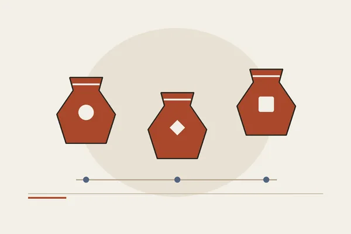

Study · Jan 2025
15,184 marks on South Indian pottery, many with Indus look-alikes
Rajan and Sivanantham (Tamil Nadu Archaeology) · Tamil Nadu graffiti study

In a sentence
Most pottery marks from 140 Tamil Nadu sites have a similar-looking Indus sign.
In plain words
Archaeologists in Tamil Nadu catalogued 15,184 marks scratched on pots from 140 sites and found that most have an Indus sign that looks similar. The marks are about 1,000 years younger, and most stand alone rather than in texts.
Technical detail
Shape parallels for roughly 60–90% of marks. Gap of over 1,000 years; mostly single marks. Earlier work found that look-alike marks do not behave like the Indus signs they resemble.
How we read it
Read: full text (the 145-page 2025 book ‘Indus Signs and Graffiti Marks of Tamil Nadu: A Morphological Study’ by K. Rajan and R. Sivanantham, free on tamildigitallibrary.in; the text pages were read and the 100 plates were not inspected image by image; tngraffiti.in itself was not opened because the project found it behind a Cloudflare challenge; the 2026 ‘Inscribed Potsherds’ volumes were already read by the project in experiments/tn_brahmi_graffiti and were not reread). Sources opened: tamildigitallibrary.in/Articles/Indus%20signs%20and%20graffiti%20marks, tamildigitallibrary.in/assets/docs/uploads/catalogue_article_file/BOK/, tamildigitallibrary.in/assets/docs/uploads/catalogue_article_file/BOK/.
What they did
- The Tamil Nadu State Department of Archaeology documented graffiti-bearing potsherds from sites across the state as part of a project to document and digitise graffiti and Tamil-Brahmi sherds (p. 29).
- Rajan and Sivanantham sorted the documented marks by shape into base signs, variants (a base sign with extra strokes) and composites (more than one base sign) (p. 29, Table 4 on p. 33).
- They compared these shapes with Indus signs from Mahadevan’s 1977 list and with graffiti on Indus pottery, and illustrated the matches in 100 plates (pp. 35-37).
- They set the comparison within a wider argument that new AMS and OSL dates make the South Indian Iron Age contemporary with the Indus Copper Age (pp. 23, 27-28).
- They describe the study as morphological, not linguistic (p. 37).
What they found
- 15,184 graffiti-bearing sherds have been reported from 140 sites in Tamil Nadu, and nearly 14,165 were documented (p. 29, Table 3).
- Nearly 2,107 signs were classed into 42 base signs, 544 variants and 1,521 composites (p. 29; Table 4, p. 33).
- Of the 42 base signs and their variants, nearly 60% have parallels in the Indus script, and more than 90% of South Indian graffiti marks have parallels among Indus graffiti marks (p. 35).
- They list 27 Tamil Nadu signs with ‘exact parallels’ and give 22 matching Mahadevan sign numbers, including 86, 125, 162, 176, 204, 328 and 365 (p. 35 and footnote 1).
- They note differences as well: sign 1.0 faces all directions in Tamil Nadu, mostly up, but always faces right on Indus sealings and left on seals; sign 3.0 is absent from Indus seals but present in Indus graffiti; sign 9.0 stands alone in Indus and South Indian graffiti but goes with vertical lines on Indus seals (pp. 35-36).
- About 70% of graffiti marks and Tamil-Brahmi inscriptions are on black-and-red ware (p. 23).
- The early iron dates they tabulate include calibrated ages of 1030 to 1569 BCE in the first rows of Table 2 (p. 27); the foreword says the dates push iron in South India to the mid-3rd millennium BCE (p. 11).
- They call the research embryonic because of limited data (p. 35) and say more cultural items are needed to prove contact (p. 38).
Strengths and limits
- This is the largest systematic catalogue of South Indian graffiti marks, with a published base-sign scheme and site counts, which makes testing possible.
- The ‘parallel’ judgements are visual and made by the authors, with no rule for what counts as a match and no chance rate; simple shapes such as circles, crosses, arrows and ladders will match across many unrelated mark systems.
- The comparison mixes Indus seal signs with Indus pottery graffiti, so a 90% match to Indus graffiti says little about the script on seals.
- The sections read give no dates for the individual sherds compared; the contemporaneity argument rests on iron and pottery dates, not on dated graffiti.
- The project already found that look-alike marks do not behave like the Indus signs they resemble (atlas 8.3), though that test was not preregistered.
What the authors say comes next
- Faithful documentation and context analysis of graffiti marks, which may help decipher them and, in turn, the Indus script. (p. 29)
- Continue explorations and excavations, which will multiply the number of graffiti-bearing sherds. (p. 29)
- Find more cultural items, beyond beads, high-tin bronze and graffiti, to prove contact convincingly. (p. 38)
- Future explorations, scientific investigations and historical linguistic analysis to clarify the cultural and linguistic questions. (p. 38)
Ideas it gives us
- Measure the chance rate of ‘parallels’: apply a fixed shape-matching rule to the 42 base signs and to control mark sets (random stroke figures of matched complexity, and potters’ marks from an unrelated tradition), and count how often each finds a match in Mahadevan’s 417 signs. The 60% and 90% figures have no baseline; if random simple marks also reach 50-60%, the parallels carry no signal. Open data enough: yes. Needs: Images or drawings of the 42 base signs (book plates and Table 4), the project’s M77 sign images, a generator for random stroke figures; an unrelated potmark set would be better but may need licensing.
- Preregister and rerun the ‘look-alikes behave alike’ test with the new base-sign scheme: for each of the 22 Mahadevan signs the book pairs with a Tamil Nadu sign, compare position in composites (first, last, alone) with position in Indus texts against a shuffled pairing. The book itself notes positional claims (sign 16.0 and 23.0 mostly at the start of composites); atlas 8.3 found p = 0.51 but had no preregistration and used an older mapping. Open data enough: no. Needs: Composite-level sequences with sign order, which the site-by-sign API (9,349 occurrences at 53 sites) does not give; the book’s Table 4 gives counts only.
- Test whether Indus-like base signs are more frequent in the earliest dated deposits than in Early Historic ones, as a contact or continuity story would predict. The book’s contemporaneity argument rests on iron dates, not on the marks; a date gradient in the marks themselves would be direct evidence, and its absence would weaken the link. Open data enough: no. Needs: Per-sherd graffiti records with site, trench, depth and phase; the 2026 volumes give these only for the 1,570 Tamil-Brahmi sherds, not for the graffiti catalogue.
What we take from it
ClosedWe tested whether look-alikes behave alike. They do not, so this route is closed for now.